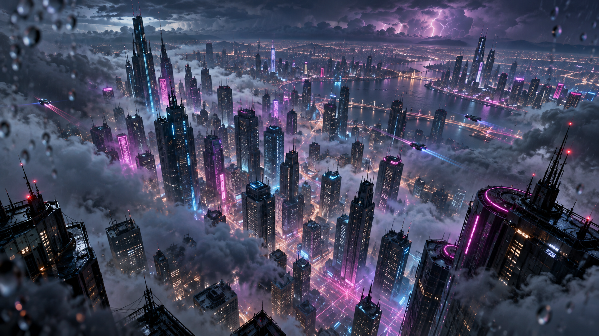

NEON DRIFT
CITY SIGNAL

NEON DRIFT
雨夜漫游
高空
街面
地下
▶ 自动漫游
音效
NEON DRIFT · 雨夜漫游
这场雨，从四百米高空
落进城市心底。
滚动即下落——穿过云层、坠入楼隙、沉进地下的暖光。一次滚动，一段坠落；停下，雨也为你停。
三章 · 海拔 480 M · 自动漫游见右下 · 建议开启声音
CH.02 · 街面
「霓虹之下，人流如数据。」
STREET — NEON PARADE
CH.03 · 地下
「再往下，是城市的心跳。」
UNDERGROUND — CITY HEARTBEAT
0%
100%
ALT · 海拔
480.0
m
垂直速度
0.0
m/s
↓
LOC · 街道定位
中山路 · 路口
07
步数
0
DIST · 距核心面档
12.0
m
B1
B2
地表 12°
已抵达 · 城市的心跳
继续下落 ↓
向下滚动 · 开始雨夜漫游
空格
漫游
M
静音
H
隐藏界面
↑
↓
滚动
本页面需要启用 JavaScript 才能呈现雨夜漫游场景。